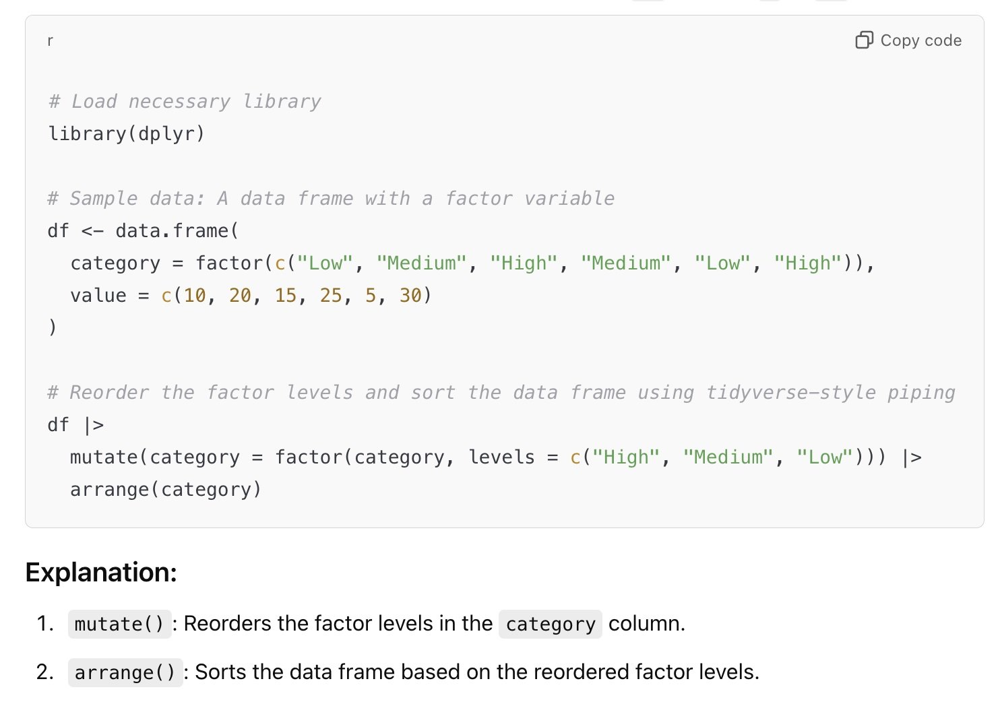

Help me help you
March 10, 2025
Agenda 3/10/25
- Reproducible examples (
reprex()) - Code style
Data Communication

Reproducible Examples
The best kind of help out there comes when you can make your question both:
- reproducible (capture everything, including libraries!)
- minimal (get rid of everything you don’t need)
use the reprex package (which is in the tidyverse).
How to reprex()?
Step 1. Write some R code and copy it into the clipboard (command-c or ctrl-c).
Step 2. Type reprex() into the Console.
Step 3. Look at the Viewer to the right. Copy the Viewer output into GitHub, Slack, an email, Stack Overflow, Posit Community, ChatGPT, etc.
reprex() example - 1st try
Code:
jan31 + months(0:11) + days(31)Output of reprex():
jan31 + months(0:11) + days(31)
#> Error in eval(expr, envir, enclos): object 'jan31' not foundreprex() example - 2nd try
Code:
jan31 <- ymd("2021-01-31")
jan31 + months(0:11) + days(31)Output of reprex():
jan31 <- ymd("2021-01-31")
#> Error in ymd("2021-01-31"): could not find function "ymd"
jan31 + months(0:11) + days(31)
#> Error in eval(expr, envir, enclos): object 'jan31' not foundreprex() example - 3rd try
Code:
library(lubridate)
jan31 <- ymd("2021-01-31")
jan31 + months(0:11) + days(31)Output of reprex():
library(lubridate)
#>
#> Attaching package: 'lubridate'
#> The following objects are masked from 'package:base':
#>
#> date, intersect, setdiff, union
jan31 <- ymd("2021-01-31")
jan31 + months(0:11) + days(31)
#> [1] "2021-03-03" NA "2021-05-01" NA "2021-07-01"
#> [6] NA "2021-08-31" "2021-10-01" NA "2021-12-01"
#> [11] NA "2022-01-31"Reproducible example w ChatGPT
generate a reprex in R to demonstrate how to reorder a factor variable

Checklist for a good reprex()
✅ Minimal
✅ Complete
✅ Runnable
✅ Clearly explains the problem
Code style
Good coding style is like correct punctuation: you can manage without it, butitsuremakesthingseasiertoread.1
All of the following examples are taken from the Tidyverse style guide.
Object names
There are only two hard things in Computer Science: cache invalidation and naming things.
– Phil Karlton
Object names
Variable and function names should use only lowercase letters, numbers, and _. Use underscores (_) (so called snake case) to separate words within a name.
# Good
day_one
day_1
# Bad
DayOne
dayone
# Really bad
T <- FALSE
c <- 10
mean <- function(x) sum(x)Spacing
Do not put spaces inside or outside parentheses for regular funtion calls.
# Good
mean(x, na.rm = TRUE)
# Bad
mean (x, na.rm = TRUE)
mean( x, na.rm = TRUE )Infix operators
Most infix operators (==, +, -, <-, etc.) should always be surrounded by spaces:
# Good
height <- (feet * 12) + inches
mean(x, na.rm = TRUE)
# Bad
height<-feet*12+inches
mean(x, na.rm=TRUE)Long function calls
If a function call is too long to fit on a single line, use one line each for the function name, each argument, and the closing ). This makes the code easier to read and to change later.
# Good
do_something_very_complicated(
something = "that",
requires = many,
arguments = "some of which may be long"
)
# Bad
do_something_very_complicated("that", requires, many, arguments,
"some of which may be long"
)Long lines (piping)
If the arguments to a function don’t all fit on one line, put each argument on its own line and indent:2
# Good
iris |>
summarise(
Sepal.Length = mean(Sepal.Length),
Sepal.Width = mean(Sepal.Width),
.by = Species
)
# Bad
iris |>
summarise(Sepal.Length = mean(Sepal.Length), Sepal.Width = mean(Sepal.Width), .by = Species)
# Also bad
summarise(
iris,
Sepal.Length = mean(Sepal.Length),
Sepal.Width = mean(Sepal.Width),
.by = Species
)Short lines (piping)
Sometimes it’s useful to include a short pipe as an argument to a function in a longer pipe. Carefully consider whether the code is more readable with a short inline pipe or if it’s better to move the code outside the pipe and give it an evocative name.
# Good
x |>
semi_join(y |> filter(is_valid))
# Ok
x |>
select(a, b, w) |>
left_join(y |> select(a, b, v), join_by(a, b))
# Better
x_join <- x |> select(a, b, w)
y_join <- y |> select(a, b, v)
left_join(x_join, y_join, join_by(a, b))Style
- The point is that coding happens in community.
- Not only do you want your code to run well, but you want other people to be able to understand it and use it.
- The more that you and others use the same syntax, the better the communication will be.